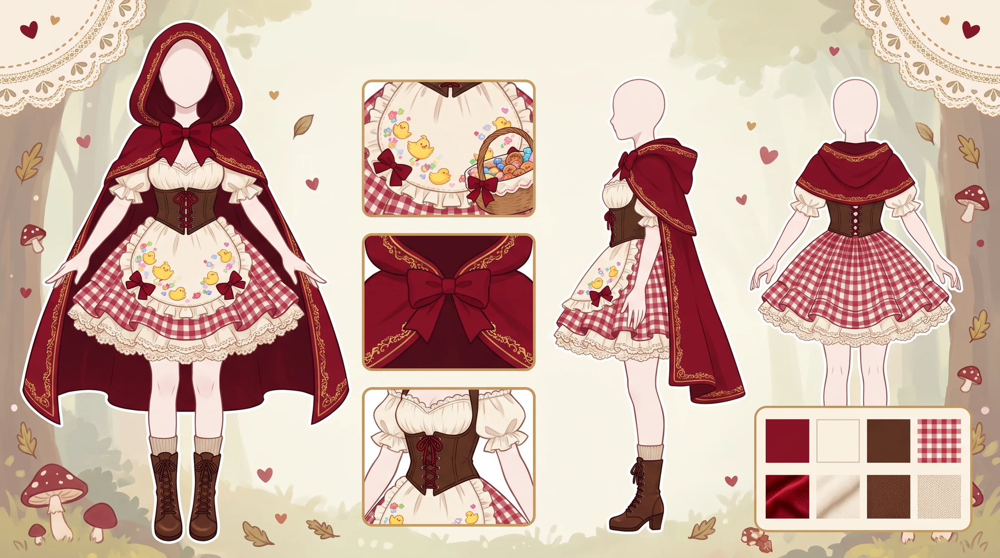
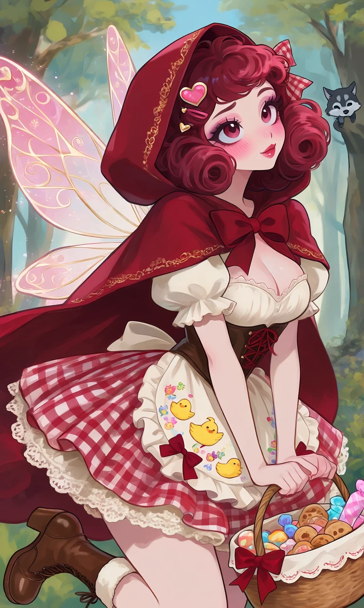
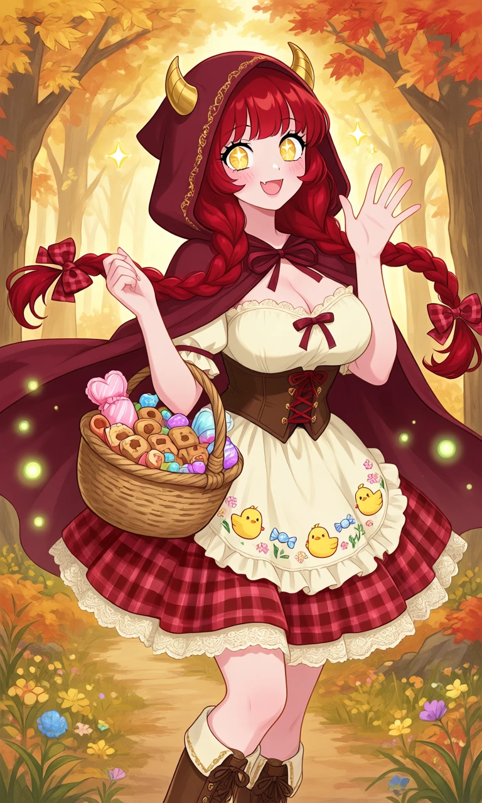

Little Red’s Duckling Picnic

Outfit Prompt
Adorable fantasy Little Red Riding Hood outfit, whimsical fairytale fashion, deep crimson red, warm brown, cream, and gold color palette.
A deep crimson-red hooded cape with delicate gold embroidery along the edges, featuring an oversized red hood and a flowing silhouette.
A cream-colored blouse with a sweetheart neckline, short puff sleeves, and delicate lace trim.
A fitted brown corset-style bodice with decorative red ribbon lacing down the front, emphasizing the waist.
A short, flared red-and-white gingham skirt with a layered cream lace petticoat peeking beneath the hem.
A cute cream-colored apron tied around the waist, decorated with embroidered yellow chicks, tiny colorful flowers, and playful candy motifs. Small red ribbon bows decorate the apron edges.
Brown leather lace-up ankle boots with rounded toes, low chunky heels, and soft cream-colored folded cuffs.
Golden heart-shaped accessories and oversized red gingham hair bows.
A charming wicker basket decorated with a red ribbon, filled with colorful wrapped candies, homemade cookies, and little pastries.
Cute feminine fairytale fashion, playful gingham patterns, delicate lace details, cozy woodland aesthetic, whimsical Little Red Riding Hood styling.
Outfit Examples



